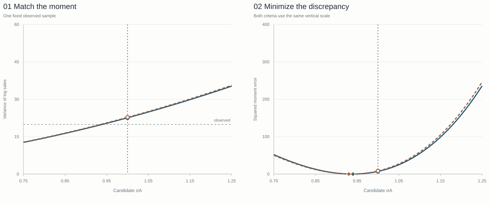
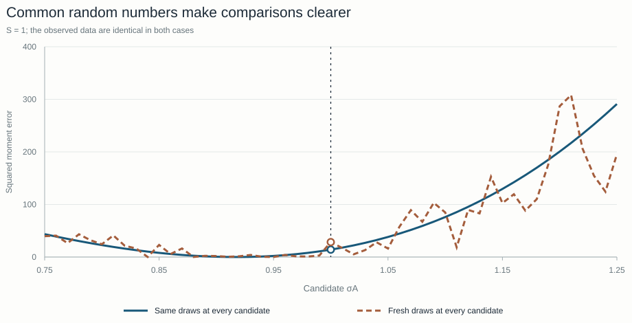

Moment matching: GMM and SMM
Estimate productivity dispersion from the variance of firms’ log sales. Calculate the model’s prediction directly, then obtain it by simulation.
Work through the numbersFor the foundations of GMM and simulated moment matching, see Hansen (1982) and McFadden (1989). This independent example uses the course’s monopolistic-competition model.
Your task: recover σA from one observed sample.
- Given
- Log sales for I = 5 firms in each of J = 100 sectors, and the known elasticity η = 5.75.
- Find
- The standard deviation of log productivity, σA. The experiment uses 1 to generate the observed sample; the estimator is not given that value.
- Check
- A GMM estimate and SMM estimates for S = 1, 10, 100 and 1,000, against the saved results on this page; then how simulation draws change the comparison. The script at the end of the page prints the same numbers.
- Firm log sales
- Observed variance
- Direct or simulated model moment
- Squared discrepancy
- Parameter that minimizes it
Firms → sectors → one data set.
The statistic is the same in observed and simulated data.
Log productivity is log Aij = σAεij, with independent standard normal εij. In this monopolistic-competition example, log sales equal (η − 1)σAεij + cj. The sector-common level cj disappears when we subtract the sector mean. We can therefore work with log sales minus that common level:
xijs = (η − 1)σAεijs.
At a candidate σA, simulated data set s has five x values in every sector j. Center the five values, square their deviations, and divide their sum by I − 1 = 4. Then average those variances across all J = 100 sectors:
x̄js = (1/I) ∑i=1I xijs
v̂s(σA) = (1/J) ∑j=1J [(1/(I − 1)) ∑i=1I (xijs − x̄js)2].
The observed target v̂ uses exactly this operation on the separate, fixed observed sample (data seed 1). It stays fixed when you change a candidate or simulation stream. The index s labels a whole simulated data set of 500 firms, not one firm or one sector.
Remaining model settings
This exact reduction uses θ = 1.2, P = 1, φ̄ = 1, ϕ = 0.25 and μA = 0. They do not enter the within-sector variance after cj cancels. The later two-period Cournot economy requires an equilibrium calculation.
Same data.
Same criterion.
The distinction is how we obtain the model’s moment.
GMM chooses parameters that make model moments close to data moments. When a moment has a formula, we can evaluate it directly. When it does not, we can approximate it with simulated data. That simulation-based approach is SMM, within the broader GMM framework.
The direct moment v(σA) is the expectation of the statistic we just built. SMM approximates that expectation by calculating v̂s(σA) repeatedly and averaging over S simulated data sets.
v(σA) = (η − 1)2σA2
Calculate the model prediction exactly.
ṽS(σA) = 1S ∑s=1S v̂s(σA)
Average the same statistic over S simulated data sets.
Both use Q(σA) = [model moment − v̂]2 and choose σ̂A = arg minσA > 0 Q(σA). Only the way we obtain the model moment changes. There is one moment and one unknown parameter.
72-second worked example · EnglishGMM and SMM: match one observed variance
Move productivity dispersion through the variance example. Compare direct and simulated moments, square their gaps, and read the two estimates.
Follow one candidate from firm values to the loss.
I = 5 firms × J = 100 sectors in every data set. S counts data sets of that size. η = 5.75 is known; σA is the candidate you choose.
- Set S = 1 and choose a candidate σA.
- Trace the five firm values into v̂1, then read the squared discrepancy.
- Increase S to 10, 100 and 1,000 while keeping the candidate fixed.
- Compare and record the GMM and SMM estimates that minimize the discrepancies.
- Switch to stream B (seed 3) and repeat. The observed target stays fixed.
Move the vertical marker along both curves.
More draws, less simulation noise on average.
The observed sample stays exactly the same.
Where does v̂s(σA) come from?
The numbers below follow the selected candidate and draw stream.
1. Five firms → one sector variance
Start with sector j = 1 of simulated data set s = 1. Here x is log sales minus the common sector level. Subtract this sector’s mean x̄11 = — from each firm value.
Swipe or scroll sideways to see every column. With the table focused, use the arrow keys.
| Firm i | xi11 | xi11 − x̄11 | (xi11 − x̄11)2 |
|---|
Sum of squared deviations — ÷ 4 = sector variance —.
2. One hundred sectors → one data-set moment v̂1
Repeat that calculation in sectors j = 2, …, 100. Each sector contributes one variance with equal weight.
Sum of all 100 sector variances — ÷ 100 = v̂1(σA) —.
Inspect all 100 sector variances in data set 1
3. S data-set moments → the SMM prediction
Do the same in each of the selected S data sets, then average their moments. Increasing S adds data sets; it does not add firms to the first sector.
Sum of the selected — moments — ÷ — = ṽS(σA) —.
Inspect the first data-set moments
Now compare this prediction with the fixed observed moment v̂ = — in the chart and loss readouts below. The five-row table is one sector of one simulated data set; the observed target uses all 100 observed sectors. Displayed numbers are rounded to four decimals; the calculations use full precision.

Continuous estimates: GMM —/SMM —
Loading the computed experiment…
Write down the fixed observed variance, the GMM estimate, and the four SMM estimates for each stream. As S increases, look for the SMM prediction to approach the direct prediction; it need not get closer at every step.
Two sources
of error.
A better simulation is not a new data set.
The observed moment v̂ is computed from one finite sample. It already contains sampling error. Here that sample never changes. The GMM estimate matches its observed moment, so it need not equal the true dispersion, σA = 1.
SMM adds simulation error to this comparison. As S grows, its simulated moment approaches the model’s directly calculated moment. Its estimate approaches the GMM estimate for this data set, not necessarily the true value.
48-second explanation · EnglishSimulation error and sampling error
More simulation improves the model prediction. The observed sample, and its sampling error, remain fixed.
| S | Stream A | Stream B |
|---|
Why keep the same random draws while moving σA?
Within each stream, we keep the underlying normal draws fixed across all candidate parameters. A change in the curve then comes from changing σA, rather than drawing a new simulated world at every point. These are common random numbers. Increasing S extends the same simulation sequence.
48-second explanation · EnglishChange the parameter, keep the random draws
Reuse the underlying draws across parameter candidates so their comparison reflects the parameter change.
Swipe or scroll sideways to see the full chart. With the chart focused, use the arrow keys.

The observed data use their own draws, separate from both simulation streams. Streams A and B are two simulation draws, not confidence bands. The seeds reproduce this Python run.
1,000 new
data samples.
Now let the observed data change.
To study estimator variability, we generate 1,000 independent observed samples using data seeds 101–1100. Each receives its own independent simulation sequence. We estimate σA by GMM and by SMM with S = 1 and S = 10.
| Estimator | Mean | Empirical SD | Approximate SD |
|---|
Empirical standard deviations use all 1,000 estimates and denominator 999. The approximation holds in large samples, so the two need not agree exactly here.
SD(σ̂GMM) ≈ σA√[2J(I − 1)]
SD(σ̂SMM) ≈ √(1 + 1/S) · SD(σ̂GMM)
With S = 1, simulation noise adds to the sampling noise in the observed data. More simulation narrows this extra source of variation; the sampling noise of the data remains.
When the formula
disappears.
With Cournot competition, solve first.
In this exercise, monopolistic competition gives a constant markup and a direct variance formula. Under Cournot competition, a firm’s market share affects its markup, which changes its price and market share again. The simple formula above no longer applies to that economy.
A numerical solver can resolve those feedbacks, simulate firm outcomes, and calculate the moments used in estimation. The principle stays the same: compare model moments with the observed targets.
If S becomes very large, why can the estimated σA still differ from 1?
Read the explanation
Because the data sample is finite. More simulation makes the model moment more accurate, but leaves the observed sample moment unchanged. The limiting simulated-moment estimate matches that sample’s GMM estimate.
Run the experiment on your computer.
Download the Python source and run it in the folder where you saved it. It needs Python 3.10 or later with NumPy, and takes about a second. In the course repository, run python lessons/01_gmm_smm/gmm_smm.py from the root instead.
python gmm_smm.pyThe script draws the observed sample and both simulation streams from fixed seeds, estimates σA by GMM and SMM, repeats the estimation on 1,000 new samples, and prints the numbers on this page. It also saves two tables in outputs/gmm_smm. The six exercises take the same steps one at a time.
Check your result
- Observed moment 19.9036 and GMM estimate 0.9392, as in the readouts of the experiment.
- SMM estimates for S = 1, 10, 100 and 1,000: 0.9173, 0.9347, 0.9415 and 0.9393 with stream A (seed 2); 0.9266, 0.9351, 0.9427 and 0.9388 with stream B (seed 3). This is the table under “A better simulation is not a new data set.”
- Over 1,000 samples, mean, standard deviation and large-sample approximation: 0.9978, 0.0355 and 0.0354 for GMM; 1.0002, 0.0495 and 0.0500 for SMM with S = 1; 0.9985, 0.0368 and 0.0371 with S = 10. This is the table under “Now let the observed data change.”
- The last lines of the output describe the two objective curves in the chart on common random numbers: with the same draws the curve has one minimum on the 51-point grid, at σA = 0.92; with fresh draws it has 16 local minima, the lowest at 0.95.
Code on GitHub lessons/ ↗ · lessons/ ↗